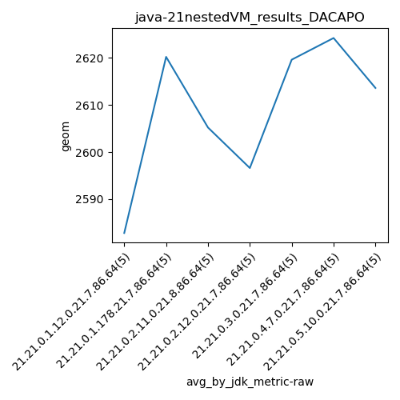
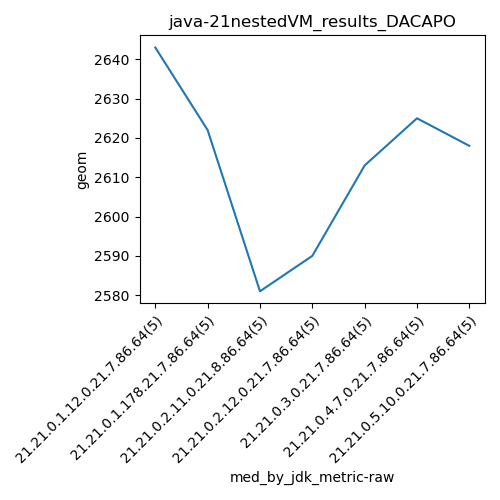

java-21 DACAPO
Context at bottom
/home/jvanek/git/benchmarks-in-nested-virtualisation-toolchain/final_results/nestedVM_results/nestedVM_results_J2DBENCH
java-21
DACAPO
/home/jvanek/git/benchmarks-in-nested-virtualisation-toolchain/final_results/nestedVM_results/nestedVM_results_RADARGUNs3
java-21
DACAPO
/home/jvanek/git/benchmarks-in-nested-virtualisation-toolchain/final_results/nestedVM_results/nestedVM_results_DACAPO
java-21
DACAPO
nestedVM_results_DACAPO
final score
Expected number of java-21 JDKs: 7
1st avgmed_alljdks_metric:
/home/jvanek/git/benchmarks-in-nested-virtualisation-toolchain/final_results/result_processing.py /home/jvanek/git/benchmarks-in-nested-virtualisation-toolchain/final_results/nestedVM_results/nestedVM_results_DACAPO geom False
values: [2659, 2643, 2688, 2483, 2441, 2596, 2655, 2655, 2622, 2573, 2581, 2591, 2737, 2579, 2538, 2559, 2590, 2559, 2685, 2590, 2646, 2613, 2743, 2545, 2551, 2625, 2663, 2586, 2639, 2608, 2559, 2618, 2652, 2632, 2607]

Expected number of iterations: 5
final number of values: 35 out of 35
Pass rate: 100.0%
values: (2441, 2743, 2608.885714285714, 2608)

** accuracy from all jdks and runs
more is better
MIN: 2441
MAX: 2743
AVG: 2608.885714285714
MED: 2608
Relative differences 1:
MIN-MAX: 11.0 %
MIN-AVG: 6.0 %
MIN-MED: 6.0 %
MAX-MIN: -12.0 %
MAX-AVG: -5.0 %
MAX-MED: -5.0 %
AVG-MED: -0.0 %
stored to java-21.properties. sort | uniq that!
2nd avgmed_by_jdk_metric:
values: [2582.8, 2620.2, 2605.2, 2596.6, 2619.6, 2624.2, 2613.6]

values: [2643, 2622, 2581, 2590, 2613, 2625, 2618]

values: (2582.8, 2624.2, 2608.8857142857146, 2613.6)
values: (2581, 2643, 2613.1428571428573, 2618)

** accuracy from all jdks where runs were avged
more is better
MIN: 2582.8
MAX: 2624.2
AVG: 2608.8857142857146
MED: 2613.6
Relative differences 1:
MIN-MAX: 2.0 %
MIN-AVG: 1.0 %
MIN-MED: 1.0 %
MAX-MIN: -2.0 %
MAX-AVG: -1.0 %
MAX-MED: -0.0 %
AVG-MED: 0.0 %
stored to java-21.properties. sort | uniq that!
** accuracy from all jdks where runs were medianed
more is better
MIN: 2581
MAX: 2643
AVG: 2613.1428571428573
MED: 2618
Relative differences 1:
MIN-MAX: 2.0 %
MIN-AVG: 1.0 %
MIN-MED: 1.0 %
MAX-MIN: -2.0 %
MAX-AVG: -1.0 %
MAX-MED: -1.0 %
AVG-MED: 0.0 %
stored to java-21.properties. sort | uniq that!
/home/jvanek/git/benchmarks-in-nested-virtualisation-toolchain/final_results/nestedVM_results/nestedVM_results_JMH
java-21
DACAPO
/home/jvanek/git/benchmarks-in-nested-virtualisation-toolchain/final_results/nestedVM_results/nestedVM_results_SPECJBB
java-21
DACAPO
/home/jvanek/git/benchmarks-in-nested-virtualisation-toolchain/final_results/nestedVM_results/nestedVM_results_RADARGUNs1
java-21
DACAPO
pass rates:
nestedVM_results_DACAPO=100.0%
Context:
- nestedVM_results
- DACAPO